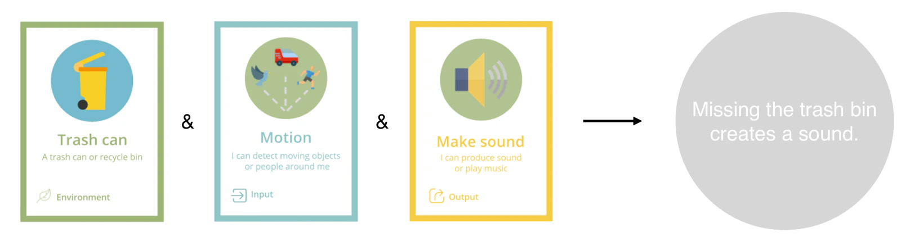
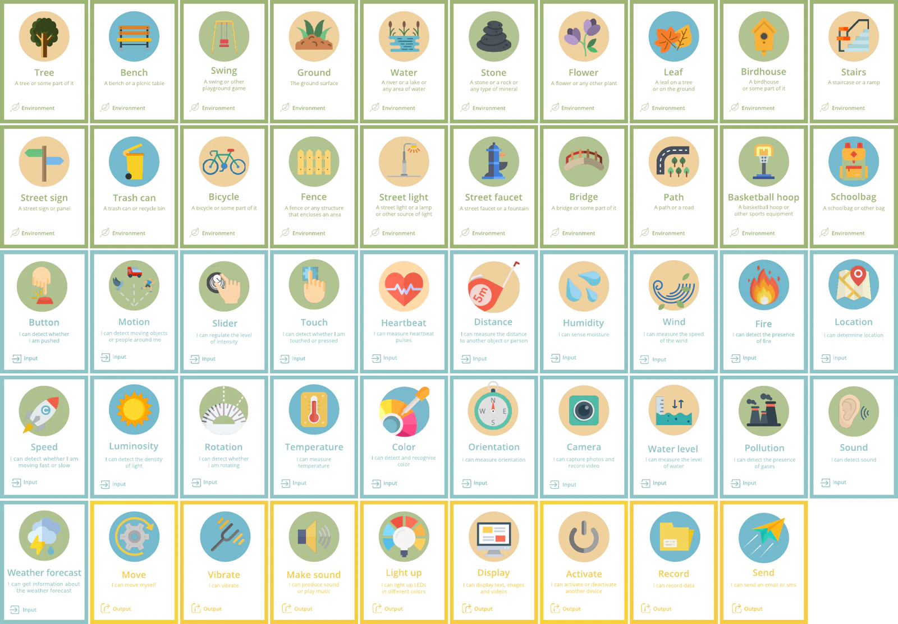
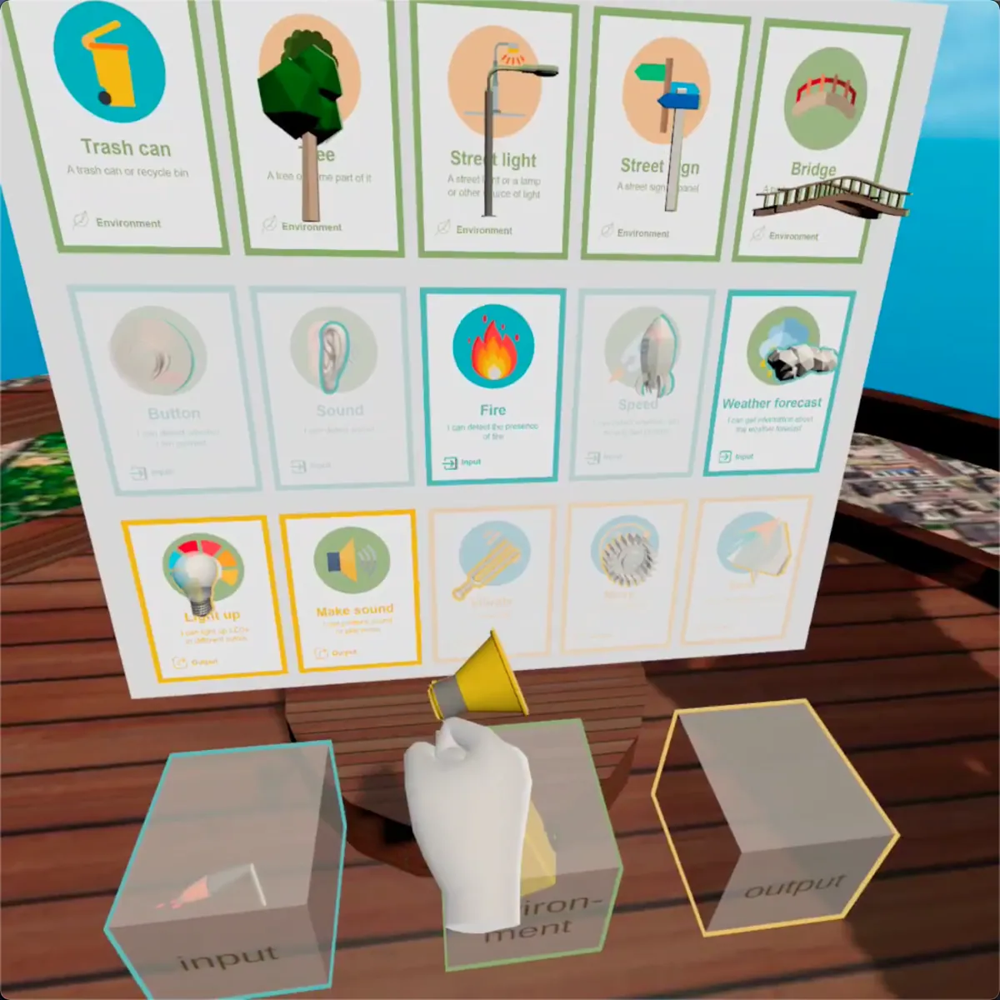
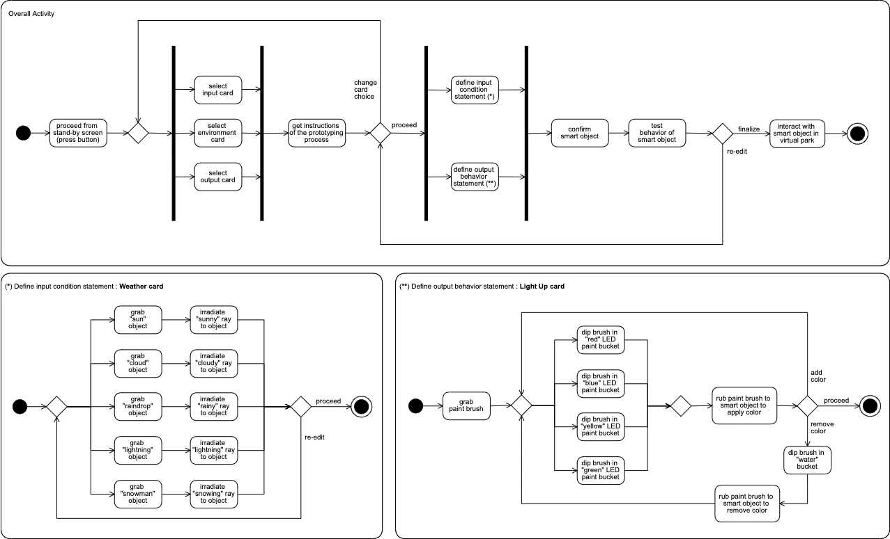
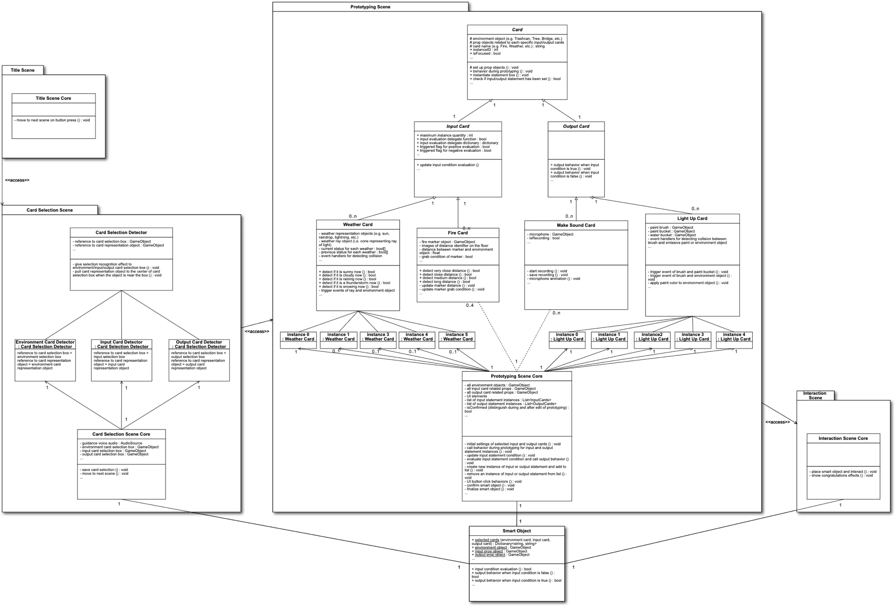

Développement d’un système VR de prototypage d’objets interactifs pour enfants
Février 2021
Présentation
Smart Codesign VR est une plateforme qui permet d’assembler des choses interactives — des « objets intelligents » — en réalité virtuelle (VR) et de les toucher sur place pour voir ce qu’elles font. Le joueur choisit trois cartes, une d’environnement, une d’entrée et une de sortie, et définit de ses propres mains ce qui se produit et quand. L’objet achevé est posé dans un parc virtuel, où il peut réellement être actionné et éprouvé.
Le point de départ est SNaP (The Smart Nature Protagonists), un jeu de plateau mis au point par l’i3Lab de l’École polytechnique de Milan. Dans SNaP, les enfants combinent des cartes pour imaginer des objets intelligents — mais ce qu’ils imaginent en reste à une phrase sur le papier. Ce projet s’est donné pour but de donner un corps à cette phrase en VR : quelque chose que l’on assemble par son propre mouvement et que l’on peut ensuite toucher.
Il a été conçu et réalisé par une équipe de quatre personnes comme travail final du cours Advanced User Interfaces (année 2020-21) à l’École polytechnique de Milan. Les utilisateurs visés sont des enfants de 11 à 13 ans, en particulier des enfants présentant des troubles du neurodéveloppement (TND). Il a été réalisé pour l’Oculus Quest 2 avec Unity et C#, et a abouti à un prototype qui fonctionne d’un bout à l’autre, du choix des cartes jusqu’au maniement de l’objet dans le parc.
SNaP, le jeu de plateau, et les prémisses de la conception
Un jeu où les enfants sont les concepteurs
SNaP est un jeu de plateau où deux à quatre enfants tiennent le rôle de « designers » tandis qu’un adulte qui anime la séance joue le « maire ». Le maire énonce une mission au départ, et les enfants en discutent et combinent des cartes pour imaginer un objet intelligent qui la résout. L’objectif est de développer la créativité ainsi que la capacité de collaborer et de mettre sa propre pensée en mots. Le jeu est en outre présenté comme utilisable à des fins thérapeutiques auprès d’enfants présentant des troubles du neurodéveloppement.
Environnement, entrée, sortie — trois types de cartes
SNaP comporte trois types de cartes, chacun avec un rôle différent.
Les cartes environnement (Environment) sont la chose même que l’on rend intelligente. Arbre, banc, balançoire, eau, pierre, lampadaire, poubelle, vélo, pont, escalier, cartable : des choses ordinaires d’un parc ou d’une rue. Ni capteur ni fonction, mais l’objet dans lequel les deux autres viennent s’installer.
Les cartes entrée (Input) décident de ce que cet objet perçoit : bouton, mouvement, contact, distance, température, humidité, luminosité, couleur, son, feu, niveau d’eau, prévisions météo — autrement dit les capteurs.
Les cartes sortie (Output) décident de ce que cet objet fait : s’allumer, émettre un son, vibrer, se déplacer, afficher, enregistrer, envoyer — les actionneurs.
La carte environnement est nécessaire parce qu’un même couple d’entrée et de sortie signifie tout autre chose selon l’endroit où il se loge. « Émettre un son quand un mouvement est détecté » sur une poubelle devient « rater la poubelle fait du bruit » ; sur un lampadaire, « une lumière qui signale que quelqu’un approche ». À eux seuls, l’entrée et la sortie ne font que la spécification d’un appareil ; ce n’est qu’avec l’environnement en plus que cela devient une phrase sur quelque chose du monde qui nous entoure.


Faire d’une phrase sur le papier une chose que l’on touche
Jusqu’ici, une séance de SNaP s’achevait au moment où l’objet intelligent imaginé était couché en une phrase. À l’i3Lab, une « planche physique » associant une tablette et un Arduino était développée en parallèle pour construire physiquement cette phrase. Smart Codesign VR est une autre réponse au même problème, avec la VR pour médium — une direction que l’équipe de recherche n’avait pas encore essayée.
Choisir la VR change deux choses. D’une part, l’enfant peut prototyper avec le mouvement de tout son corps : saisir, transporter, éclairer, peindre au pinceau deviennent, tels quels, les gestes de « fixer une condition » et de « décider d’un comportement ». D’autre part, ce qu’il a imaginé se dresse visuellement devant lui et peut être touché sur place. Une phrase abstraite devient une chose ayant une taille et une forme.
Pour qui cela a été conçu
Le public principal est constitué d’enfants de 11 à 13 ans, avec une attention particulière aux enfants présentant des troubles du neurodéveloppement. Concevoir un objet intelligent demande un certain raisonnement logique, si bien que SNaP comme cette version en VR supposent un âge minimum.
Dans la prise en charge des enfants avec TND, un objectif fréquent est de développer la capacité à formuler sa propre pensée à autrui. On sait aussi que le maniement de l’abstrait leur est difficile et que leur durée d’attention est limitée. En revanche, les jeux que l’on peut toucher, les activités menées avec d’autres et celles soutenues par des adultes ou par la technique se révèlent efficaces, et l’on sait que l’engagement change lorsque l’expérience elle-même est intéressante. Nombre d’enfants ressentent la prise en charge classique comme ennuyeuse et tendue.
Le soin porté à l’espace lui-même
D’après les travaux consultés, quatre points comptent pour rendre un espace confortable à des enfants avec TND. Le son (pour une audition sensible : isolation et volume réglable, un son calme et uniforme étant préférable) ; la lumière et la couleur (les couleurs vives et saturées réservées à de petites surfaces, sur un fond calme et peu saturé) ; l’organisation de l’espace (un espace ordonné, aux limites nettes, se traite plus facilement) ; et les matériaux (simples, lisibles, disposés de manière à ne pas gêner la circulation). L’espace virtuel est de surcroît un lieu où ces quatre points relèvent entièrement de celui qui conçoit.
Les contraintes propres au médium VR
En même temps, la VR comporte des contraintes qu’on ne peut ignorer : le coût du matériel, le mal des transports, la charge sur la tête et la nuque due au poids du casque, les accidents liés au champ de vision obstrué, la fatigue oculaire d’un usage prolongé, et la dépendance née d’une immersion excessive dans le monde virtuel. Chez les enfants avec TND s’y ajoute une inquiétude propre : la frontière entre le réel et le virtuel peut s’estomper plus facilement.
Cela a directement pesé sur les décisions de conception. Garder l’interaction simple tout en laissant assez de résistance pour qu’elle apprenne quelque chose. Que le visuel et le sonore soient nets sans que la stimulation devienne trop forte. Et donner à l’expérience une fin nette : une fois le prototypage et le maniement dans le parc terminés, l’activité est close. C’est aussi la décision de ne pas concevoir quelque chose qui retienne l’enfant dans le monde virtuel.
Ce qui a été fait — le déroulé de l’expérience et sa réalisation
Les quatre scènes de l’expérience
L’application se compose de quatre scènes : l’écran d’attente, la sélection des cartes, le prototypage et le maniement dans le parc.
1. Écran d’attente
Au lancement, un écran-titre apparaît et ne va pas plus loin tant qu’un bouton de la manette n’est pas pressé. C’est une retenue délibérée, pour que la partie principale ne commence pas avant que le casque soit en place et la posture installée.
2. Sélection des cartes — saisir, mettre dans la boîte
Dans la scène suivante, on choisit une carte pour chacun des trois types : environnement, entrée et sortie. La manière de choisir consiste à saisir l’objet qui représente la carte, à le porter jusqu’à la boîte correspondante et à l’y déposer. Saisir et porter plutôt que cliquer, c’est ce qui tire parti des trois dimensions qu’offre la VR. Lorsque les trois boîtes sont détectées comme remplies, une consigne vocale conduit à la scène de prototypage. L’ordre est indifférent, mais on n’avance pas sans avoir rempli les trois.

3. Prototypage — décider de la condition et du comportement avec le corps
C’est ici le cœur du système. Pour la carte d’entrée choisie, on définit le « quand » ; pour la carte de sortie, le « que fait-elle ». La manière de manipuler est construite carte par carte, et chacune se voit attribuer un geste que seul un suivi à six degrés de liberté rend possible.
Si l’on choisit « prévisions météo » comme entrée, par exemple, des objets figurant le soleil, les nuages, la pluie, l’orage et la neige apparaissent à portée de main. En saisir un et diriger vers l’objet cible le rayon qui en part fixe la condition. Si l’on choisit « s’allumer » comme sortie, le joueur saisit un pinceau, en trempe la pointe dans le pot de peinture d’une couleur et le frotte sur l’objet pour décider de la couleur d’émission. Pour effacer une couleur déjà posée, il suffit de tremper le pinceau dans le pot d’« eau » et de frotter à nouveau.
La décision de réalisation la plus lourde de conséquences a été de permettre de définir plusieurs couples entrée-sortie côte à côte. Le plan initial n’en prévoyait qu’un : « s’il fait soleil, briller en rouge », et c’était fini. En les rendant multiples, un même objet peut répondre différemment à plusieurs situations : « rouge au soleil, bleu sous la pluie, blanc sous la neige ». Un couple défini peut être exécuté et essayé avant d’être validé, et s’il ne convient pas, on peut revenir en arrière et le corriger.
{kind=link}
{kind=link}
4. Le parc — toucher ce que l’on a fait
Une fois l’objet validé, on passe à un parc virtuel. Le joueur y pose l’objet intelligent qu’il a assemblé, provoque la condition d’entrée qu’il a définie et constate lui-même le comportement de sortie. Une fois l’objet en marche, une célébration apparaît et l’expérience prend fin.
Le déroulé d’ensemble
La figure suivante rassemble tout cela en diagrammes d’activité UML. Celui du haut donne le déroulé général ; les deux du bas développent en détail le maniement de la carte « prévisions météo » et celui de la carte « s’allumer ». Pouvoir revenir choisir de nouveau après la sélection des cartes, une fois les consignes reçues, et pouvoir revenir à l’édition après validation et essai, sont inscrits chacun comme un embranchement.

Matériel et outils
L’appareil visé est l’Oculus Quest 2. Il dispose d’un suivi à six degrés de liberté, si bien que se tourner, marcher et saisir deviennent directement des entrées. Manipuler des objets virtuels à la main, encore et encore, étant au cœur de l’expérience, il a été jugé qu’un appareil à trois degrés de liberté dans lequel on glisse un téléphone ne pouvait pas convenir.
Le moteur de jeu est Unity et le langage C# ; la liaison avec le Quest 2 passe par le paquet Oculus Integration, d’où proviennent le comportement de la caméra VR, le rendu et une API commune pour les entrées des manettes.
Quatre scènes et treize classes
Le système se divise en quatre scènes Unity, qui correspondent directement aux quatre scènes de l’expérience. Il y a treize classes en tout, dont trois abstraites.
La scène de titre ne contient que TitleSceneCore, qui passe à la scène suivante lorsqu’un bouton est pressé.
La scène de sélection des cartes se compose de CardSelectionSceneCore et de CardSelectionDetector. La première crée trois instances de la seconde et les affecte aux boîtes de sélection de l’environnement, de l’entrée et de la sortie. Chaque boîte partage le même comportement : lorsqu’un objet figurant une carte s’approche, elle l’attire à l’intérieur et marque cette catégorie comme « sélectionnée ». Une fois les trois remplies, le contenu de la sélection est écrit dans la classe SmartObject et la scène avance. SmartObject est une classe statique : ses données ne sont pas détruites d’une scène à l’autre. C’est ce seul point qui relie les quatre scènes en une seule expérience.
La scène de prototypage est la scène centrale. PrototypingSceneCore gère de façon centralisée l’ensemble de la procédure, et le comportement des cartes est représenté par une hiérarchie d’héritage dont Card est le sommet. Sous Card viennent InputCard et OutputCard, et sous celles-ci les classes concrètes de chaque carte : Weather, Fire, MakeSound, LightUp. Seules les classes concrètes terminales effectuent réellement les opérations de prototypage, si bien que les trois du dessus sont abstraites.
PrototypingSceneCore détient une liste d’instances de conditions d’entrée et une liste d’instances de comportements de sortie. Si les cartes choisies sont « prévisions météo » et « s’allumer », la première ne contient que des instances de Weather et la seconde que des instances de LightUp. Une de chaque est créée automatiquement au démarrage, puis leur nombre augmente à chaque appui sur le bouton d’ajout de l’interface. À chaque image, toutes les conditions d’entrée de la liste sont évaluées et les comportements de sortie correspondants sont appelés. Lorsque l’utilisateur valide, isConfirmed passe à vrai et les données du comportement assemblé sont écrites dans les propriétés statiques de SmartObject.
La scène d’interaction ne contient que InteractionSceneCore, qui prend en charge la mise en place de l’objet dans le parc, l’exécution des conditions d’entrée et l’observation des sorties, ainsi que la célébration finale.

Smart Object, en bas au centre, conserve des données d’une scène à l’autre. Les attributs et les méthodes du diagramme sont simplifiés pour la lisibilité.Le code source est consultable au lien suivant :
github.com/takafumihoriuchi/SmartCodesignVR — Assets/myScripts
Ce qui a abouti, ce qui reste
Sur les 49 cartes, 9 ont été réalisées
Neuf cartes ont été réalisées dans le prototype. Les mécanismes de base — choix des cartes, définition des conditions et des comportements, gestion de plusieurs instances, transmission des données entre scènes — ont été menés à un état fonctionnel, si bien qu’ajouter les cartes restantes n’est en principe qu’une question de temps. Six cartes de plus ont été conçues sans que leur réalisation ait pu aboutir.
| État | Cartes |
|---|---|
| Réalisées (9) | Environnement : arbre, lampadaire, panneau routier, poubelle, pont Entrée : feu, prévisions météo Sortie : émettre un son, s’allumer |
| Conçues seulement (6) | Entrée : bouton, vitesse, son Sortie : se déplacer, vibrer, envoyer |
| Non entamées (34) | 15 cartes d’environnement, 16 d’entrée et 3 de sortie (afficher, activer, enregistrer) |
Aucune évaluation n’a été menée
Aucune évaluation auprès d’utilisateurs réels n’a été menée. La période de développement a coïncidé avec la participation à distance imposée par la COVID-19, et il n’a été possible d’organiser ni un atelier en présence reposant sur des casques VR, ni un équivalent à distance. Ce que ce projet peut donc montrer va jusqu’au point où l’expérience conçue tient debout sous une forme qui fonctionne ; savoir si elle est facile d’usage pour des enfants, ou si elle a du sens dans un cadre thérapeutique, n’a pas été vérifié.
Si une évaluation devait être menée, la question serait : à quel point cette UI/UX est-elle intuitive pour le travail de prototypage ? Le temps nécessaire pour aboutir, l’écart entre l’objet intelligent imaginé au préalable et celui obtenu, et le nombre d’appuis involontaires feraient des indicateurs, et un questionnaire a posteriori fondé sur la SUS (System Usability Scale) apporterait des données quantitatives. Comme le casque obstrue la vue de l’utilisateur, des réactions corporelles dont il n’a pas conscience apparaissent plus volontiers en VR, ce qui rend l’enregistrement vidéo de la séance particulièrement utile. Quant à l’âge, 13 ans est la limite réaliste : c’est là que se recoupent la tranche visée par SNaP et les consignes de sécurité d’Oculus, qui n’envisagent pas un usage en dessous de 13 ans.
Le travail qui reste devant
Parmi ce que le temps et le savoir-faire n’ont pas permis d’aborder, il y a d’abord la refonte de l’UI/UX. La réalisation nécessaire pour que les combinaisons de cartes tiennent a pris le temps, et l’expression visuelle, sonore et tactile n’a pas pu être travaillée à fond. En particulier, jusqu’où employer du texte dans une interface VR mérite d’être repensé. L’écriture est née pour consigner de l’information sur une surface à deux dimensions, et un espace à trois dimensions comporte bien des éléments qu’il vaudrait mieux reconcevoir comme interface utilisateur spatiale (SUI). Si le public est constitué d’enfants avec TND, l’interaction par la voix est une direction prometteuse.
Sur le plan académique, trois voies ont été relevées. La première est la comparaison avec la planche physique développée dans le même i3Lab. Des travaux antérieurs ont établi qu’en jouant au même jeu collaboratif dans un cadre réel et dans un environnement virtuel, les échanges verbaux augmentaient du côté virtuel ; une comparaison du même ordre pourrait valoir entre ces deux-là. La deuxième est la prise en charge de la participation simultanée de plusieurs personnes : portant « codesign » dans son nom, pouvoir construire avec d’autres à l’intérieur de l’espace virtuel a du sens. La troisième est la normalisation du format de description des objets intelligents, afin de pouvoir les emporter d’une plateforme à l’autre.
En résumé
Ce que ce projet a fabriqué n’est pas l’échantillon d’un objet intelligent achevé, mais le lieu où en fabriquer un. Les trois cartes — environnement, entrée, sortie — passent telles quelles au rang d’unités d’assemblage : l’objet, la condition, le comportement. Saisir, viser, peindre sont les gestes du corps qui les relient. La phrase née d’un jeu de plateau devient ici une chose que l’on peut mouvoir de ses propres mains, et des données qui subsistent une fois l’atelier terminé.
Takafumi Horiuchi, Paul Cozma-Ivan, Elmira Katsajeva et Olivia Ludkiewicz, « Design and Implementation of a Smart Object Prototyping Platform in Virtual Reality for Children with NDD », Advanced User Interfaces (année 2020-21) Final Exam Project, École polytechnique de Milan, février 2021.